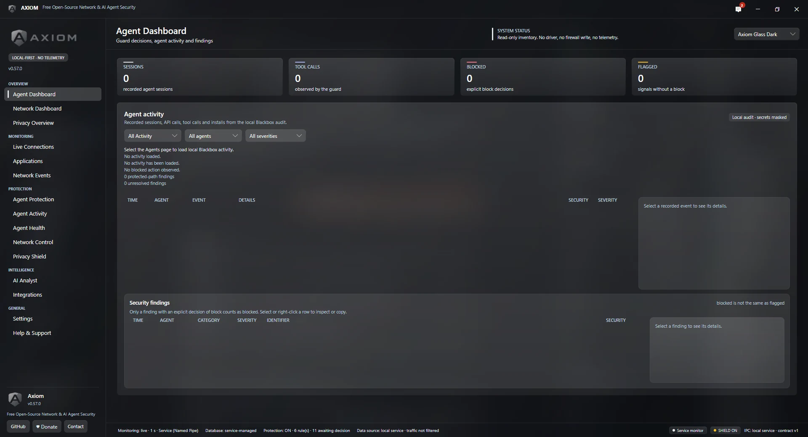
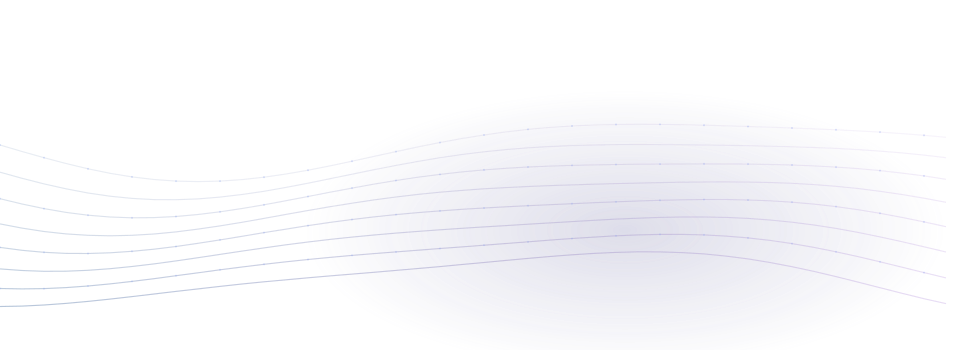

How Axiom, Agent Blackbox & OriginTrail DKG work together
A full walkthrough of local firewall control, Privacy Shield DNS filtering, pre-execution agent guardrails, and verifiable threat intelligence.
AI agents can read files, run commands and reach your network. Axiom helps you stay in control of what they do — and what reaches them.

Watch the full walkthrough of Axiom, Umanitek Agent Blackbox, and the OriginTrail DKG — then see why AI coding agents need protection around sensitive files and credentials.
A full walkthrough of local firewall control, Privacy Shield DNS filtering, pre-execution agent guardrails, and verifiable threat intelligence.
What an agent can reach and how Axiom helps you control that access.
Security for the machine that runs the agent — and for the agent processing untrusted content. Axiom combines local guard decisions with system-level controls where the operating system supports them.
Detect hostile instructions, unsafe skills, malicious packages and suspicious tool output before they influence an agent's next action.
Watch tool calls, sensitive-file access and outbound activity, applying scoped local policy and verified OS controls where available.
Keep visibility into local processes and network connections. Manage Axiom-owned firewall rules and filter unwanted DNS activity using local policy and curated lists.

Illustrative overview — actual protection states are reported individually in Axiom.
A guard verdict is not automatically a proven block. Axiom distinguishes observation, policy decisions, OS read-back and confirmed outcomes.
Agent actions, process context, file access and network events.
Local policy, Blackbox guard signals and verified intelligence.
Apply a supported hook or operating-system boundary.
Show what was attempted, what was blocked and what is unverified.
Existing OS firewall rules and locally available guard policies can keep working offline. After synchronization, cached Blackbox/DKG intelligence remains available as last-known context — without pretending it is a fresh sync.
Axiom can use the Agent Blackbox guard and OriginTrail DKG threat knowledge while helping people contribute higher-quality observations back to the ecosystem.

Provenance-aware threat knowledge
and curated intelligence.
Detection, guard decisions
and approved reporting.
AXIOMLOCAL POLICY & CONTROLObserve. Decide.
Enforce where supported.
Scoped policy, guard decisions
and supported OS controls.
Filtered, sanitized observations.
Shared only with user approval.
Axiom keeps reports local until the user approves them. Candidates are normalized, checked against provenance and excluded sources, sanitized and submitted through the Blackbox reporter.
Community findings do not automatically become firewall blocks. Signed reports are not the same as curator-verified threats.
A single Axiom experience across Windows, macOS and Linux, with operating-system-specific enforcement and transparent capability reporting. Windows x64 is a development build pending clean-machine QA; Ubuntu 24.04 amd64 and Intel macOS builds are previews under active development. None of the builds is audited.
Axiom is an independent open-source project within OpenDKG. The organization develops practical tools around technologies that bring real value to users — and welcomes the people who want to help make them better.
Meet OpenDKG
 OPEN-SOURCE ORGANIZATION
OPEN-SOURCE ORGANIZATION
Axiom is in active development, not audited or production-ready. Windows x64 has a development-build installer and portable ZIP, pending clean-machine QA. Ubuntu 24.04 amd64 and Intel macOS builds are previews; the macOS build is ad-hoc signed and its network extension needs separate activation. Download checksums are published as SHA256SUMS.txt. Firewall, DNS or agent-hook changes can interrupt connectivity or block tools.